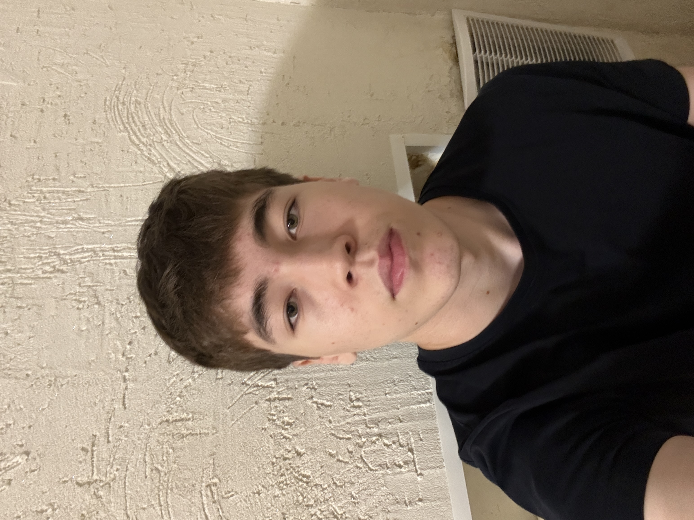
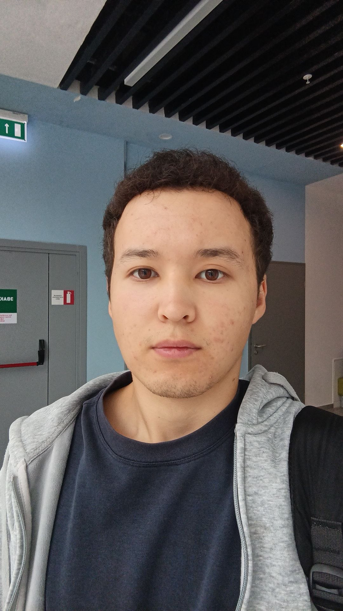

Our Team

Yessetaiuly Inal
Role: Web Developer & Content Lead
Education: IT Student, Astana IT University
Inal is an undergraduate student passionate about web technologies and software engineering. He is interested in building intuitive digital tools that enhance student collaboration and campus life. In this project, he contributed to the concept, site architecture, and information research.
Skills & Interests:
- Web Development (HTML5, CSS)
- Software Engineering & Algorithms
- Campus Community & Team Leadership

Nurkeldi Baizhigit
Role: Frontend Developer & UI/UX
Education: IT Student, Astana IT University
Nurkeldi is an IT student focused on interface design, web accessibility, and interactive web pages. For the Campus Life project, he worked on developing interactive forms, structured tables, and ensuring clean layout and usability across different pages.
Skills & Interests:
- Frontend Web Design & Usability
- Interactive Forms & Data Tables
- Web Standards & Modern Technologies
Our Mission
The Campus Life portal was created as part of the Web Technologies course to provide university students with a single, convenient hub for campus navigation, study advice, and administrative contacts.
Our goal is to make campus resources accessible, clear, and easy to use for both freshmen and continuing students.